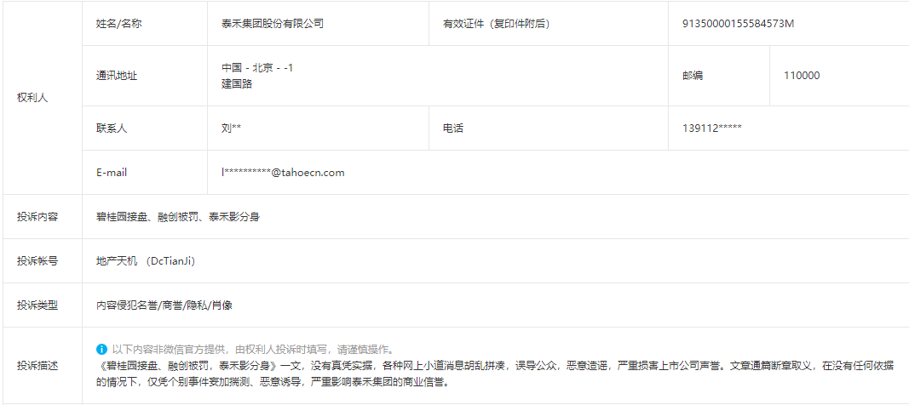
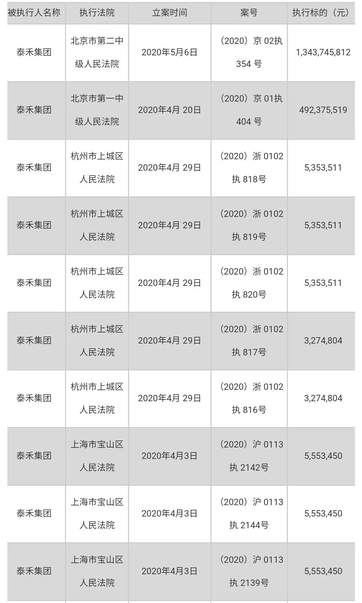

闽系房企泰禾集团董事长黄其森再次被列为被执行人金额18亿元
闽系房企泰禾集团、董事长黄其森再次被列为被执行人，金额18亿元
五月事多，已忙完，恢复更新。
4月27日的文章，被泰禾投诉了。准备好的一堆资料没用上，因为投诉经审核不成立。商业信誉，泰禾还好意思说信誉？慢慢捶你

凌迟是才是极刑，所以也不打算一两篇文章就捶完泰禾。拉长时间线，一个月至少捶一次，一年捶12次以上。经常捶，才能让人牢记，达到广而告之的效果。
5月11日晚，停牌中的泰禾发布公告，公司全资子公司、实际控制人黄其森因未偿还一笔13亿元的融资款和5亿元的借款，被列为被执行人。
2018年3月，华能信托以收益权转让及回购的融资方式向泰禾控股子公司发放项目收益权转让价款13亿元，期限2年整。
2017年12月，泰禾全资子公司北京泰禾嘉盈房地产开发有限公司向金融机构借款5亿元，泰禾投资集团、泰禾济南的一家全资子公司、公司实控人及一致行动人黄其森、叶荔提供了反担保。
截至目前，泰禾被列为被执行人的执行标的累计金额18.97亿元。2020年以来，泰禾被列为被执行人共10起，详情如下：

高息融资、大量卖项目股权、裁校招生、项目停工、业主维权......这是一家充满了负面信息，却特别能吹牛的房企，至于吹牛的历史，2000亿元、1500亿元、“资金问题已解决”等等，至今仍历历在目。
还成了TOP50中，唯一的一家延期披露年报的房企。年报“难产”和未来大量项目延期交房等，疫情是最佳背锅对象，是最好的借口。就像男人做错事，可以经常把罪名甩给“酒”一个道理。
截止2020年3月31日，泰禾的货币现金55.53亿元，较2019年底下降58.60%，本已资金非常紧张，这下更是捉襟见肘。
更致命的是，截止3月31日，泰禾一年内到期的有息负债为672.4亿元，包括短期借款65亿元。
通常情况下，房企现金短债比大于1才算是安全的，只有这样，才意味着公司账上的钱足以支付这一年内要还的钱。
如果 天机自个买房，这种情况下，为安全起见，不会考虑这类房企 。天机若是员工，为了自身职业声誉，不会考虑将房子卖给客户，更不会考虑这类公司内部发行的基金产品。
大城小院项目的业主说，距离合同约定交房日期只有2个多月，但项目在6个月以前已经停工。据他们了解，项目上没有资金，在监管银行存的购房款也被违规抽走。还有前几日，闹得沸沸扬扬的北京业主维权书。
媒体报道，上海、北京、杭州、苏州、东莞、太原等地的项目，均存在延期交付或长时间停工状态。停工、延期的原因，也如出一辙，业主们指控项目建设资金被抽调。
至于股票，就更不会碰了，上涨靠喊话（2000亿的回声还没消失），下跌的时候，跟拉稀一般一泻千里，较2018年峰值时下跌近80%
4月30日，泰禾收到深交所关注函，要求泰禾5月8日前将相关说明材料报送，泰禾表示，将延期至5月15日回复。
4月28日，国内评级机构将泰禾集团评级展望下调至负面。
当“成龙魔咒”再次发威，泰禾将走向何方？
其他的，月底再捶一次，先这样。

按日期浏览全部来源（同日按条目标识排序）